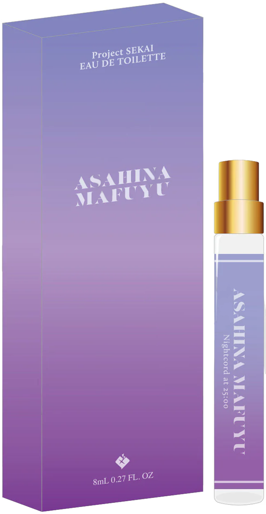
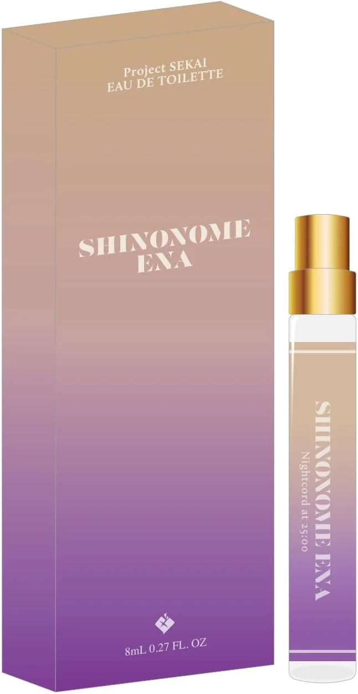

The top notes are refreshing, accompanied by lemon and eucalyptus, and are complemented by a light veil of cyclamen and patchouli, while the last notes are impressive, with vanilla and white musk giving off a refined sweetness. This fragrance will brighten up any darkness, like the brightest star in the sky.
The top notes are reminiscent of candy, packed with a variety of fruits such as peaches, pears, and bananas, and the sunny flowers of jasmine and tuberose add a touch of sparkle, while the last notes are layered with calmness and warmth from white musk and amber. This fragrance is packed with excitement and thrills that will make anyone smile, and will make you dream of sparkling dreams.
The top notes are radiant with the freshness of lemon and white grapefruit, while the middle notes are light and sweet with lavender and jasmine, while the last notes are a delicate contrast of cedarwood and musk. This fragrance resonates and spreads endlessly with the clear scent of the longing for the dreams of childhood.
The top notes are a mix of the bittersweetness of bergamot and the sweetness of vanilla in the darkness, the middle notes are lit by flowers such as lilies and roses, and the last notes are heavy with oakmoss and cedarwood. This fragrance offers a glimpse into a unique world created by heavenly talent.
The top notes of fruits such as green apple and lemon create a refreshing and delicate sweetness, while the soft petals of flowers such as jasmine and lily of the valley gently envelop them, and the last notes of musk and amber light up the darkness with a warm glow. This fragrance is filled with the purest wishes of someone you love, as you continue to think of their happiness in the silence of the night.
Top: Lemon, green apple, pineapple, grapefruit
Middle: Rose, Lily, Jasmine, Cyclamen, Lily of the Valley, Savon
Last: Musk, Amber, Cedarwood

Asahina Mafuyu
$30
Fruits such as green apple and white peach welcome you with a refreshing sweetness, then in the middle notes, they float as if hidden among flowers such as narcissus, while cedarwood and ozone slowly melt away like light snow at the end. It is an ephemeral fragrance that makes you think of the future as you gently reach out your hand to the ray of moonlight that shines into the inorganic world of black and white.
Top: Green apple, grape, white peach
Middle: Lily of the valley, jasmine, narcissus, savon
Last: Cedarwood, Ozone, Musk, Amber

Shinonome Ena
$30
Caramel packed with almond and coconut colors jasmine and gardenia with an attractive sweetness, slowly blending with amber and musk to create a rich fragrance that spreads endlessly at the end. It is a vivid fragrance like a canvas painted with colors of joy, kindness, pain, and regret.
The bitter and simple scent of lemon and bergamot is wrapped in the sweetness and petal decoration of flowers such as jasmine and rose, and finished with a warm ribbon of amber and vetiver. It is a fragrance that mixes freedom and secrecy, like gently storing your thoughts and wishes in a box decorated with gorgeous lace and wrapping paper.